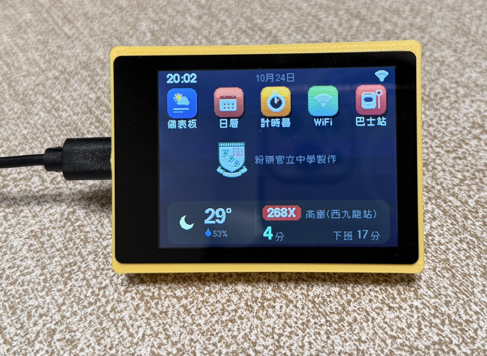
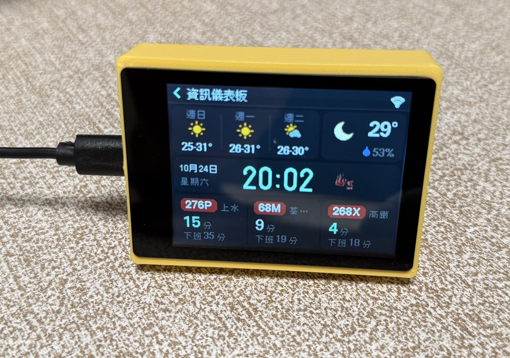
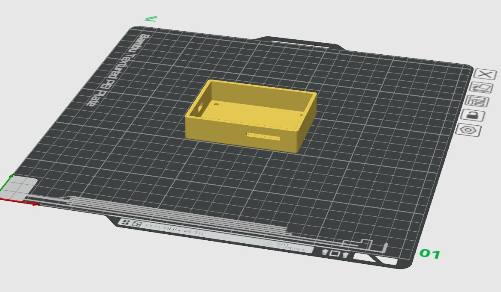

製作小型資訊儀表板
用 ESP32-S3 2.8″ 觸控屏＋3D 打印外殼，做一個顯示時間、天氣、巴士到站等資訊嘅桌上儀表板。粉嶺官立中學 DAT 教學頁。

01成品與外殼


02需要材料
- ESP32-S3 2.8 吋電容觸控屏（Waveshare ESP32-S3-Touch-LCD-2.8 V1／V2；觸控晶片 CST328 或 CST3530）
- 3D 打印外殼（可下載本頁 STL／F3D）
- Type-C 電源線
- M2.5×12 平頭螺絲 ×4
- 3.7V 鋰電池（約 1000mAh，mx1.25 插頭）— 若長時間用電源線供電，可不購買
03製作過程
-
用 AI 做 Vibe Coding（可選）
按你想要的功能同介面，請 AI 為 ESP32-S3 V2、Waveshare 觸控晶片 CST3530 寫程式。唔想自己寫？直接下載本教學程式包 ESP32_S3_Multimedia.zip（見下方下載）。 - 把程式燒錄到 ESP32（跟下一節「程式燒錄過程」）
- 測試及安裝：通電確認畫面同觸控正常後，裝入 3D 外殼，鎖上螺絲；可選接上鋰電池。
04程式燒錄過程
建議用 Arduino IDE（未安裝可先下載）。
一）加入 ESP32 開發板
- 開 Arduino IDE →「檔案」→「偏好設定」
- 喺「額外的開發板管理員網址」貼上：
https://espressif.github.io/arduino-esp32/package_esp32_index.json - 確定後，「工具」→「開發板」→「開發板管理員」
- 搜尋 esp32，選 esp32 by Espressif Systems → 安裝（建議 3.0 或以上）
- 裝完後，「工具」→「開發板」揀 ESP32S3 Dev Module
二）安裝程式庫
- 「工具」→「管理程式庫」（或「素描」→「引入程式庫」→「管理程式庫」）
- 搜尋 GFX Library for Arduino（作者 moononournation）→ 安裝
- 再搜尋 U8g2（作者 oliver）→ 安裝
三）燒錄設定
接上 Type-C，喺「工具」選好以下項目，再開啟資料夾入面嘅 ESP32_S3_Multimedia.ino 並上傳：
Wi‑Fi：公開程式包只附 secrets.h.example。可複製成 secrets.h 填入熱點，或燒錄後用觸控「Wi‑Fi 設定」加入（建議）。唔好把真實密碼提交到公開倉庫。
05測試及安裝
- 燒錄成功後重啟，應見到開機畫面（粉嶺官立中學校徽）同主選單。
- 試撳：儀表板、日曆、計時器、Wi‑Fi、巴士站等圖示。
- 連上 Wi‑Fi 後，可睇天氣、巴士到站等網絡資料（視程式設定）。
- 確認無誤，將主板放入 3D 外殼，用 4 粒 M2.5×12 平頭螺絲固定；需要時接上鋰電池。